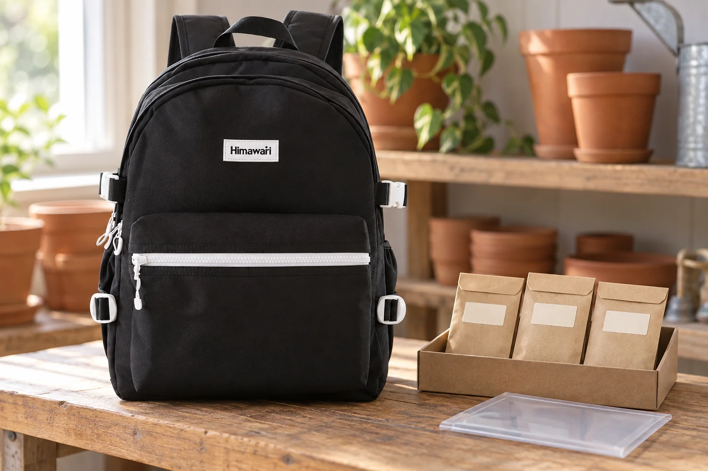
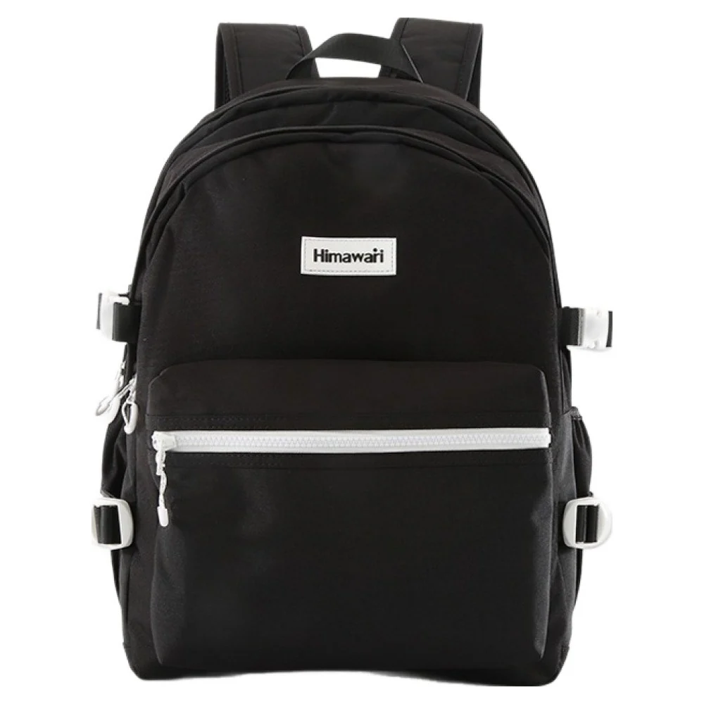

씨앗 나눔 가방, 개인 짐을 펼치지 않는 교환 묶음

작은 봉투 여러 장을 들고 나눔 모임에 갈 때 백팩의 얇은 틈이 눈에 들어올 수 있습니다. 한두 장씩 포켓에 나누어 넣으면 출발할 때는 가지런해 보이지만 교환 자리에서는 어느 칸의 봉투를 꺼냈는지 다시 살펴야 합니다. 씨앗을 담은 봉투도 마찬가지입니다. 교환할 봉투만 밖으로 꺼내고 개인 짐은 가방 안에 남길 수 있는 구성을 생각해봅니다.
나눌 물건의 포장과 표기는 해당 모임과 물품의 안내에 맞춰 준비합니다. 백팩 안에서 다룰 대상은 준비를 마친 닫힌 봉투 묶음입니다. 봉투를 바꾸어 담거나 이름을 새로 붙이는 일로 가방 공간을 맞추지 않습니다. 사용하는 보관함이 있다면 실제 봉투를 넣고 닫은 크기를 봅니다. 봉투 한 장의 납작한 모습보다 여러 장이 겹친 전체 두께가 비교할 외형입니다.
출발 전, 꺼낼 묶음의 테두리를 정한다
개인 소지품과 교환할 봉투를 테이블의 다른 쪽에 놓아봅니다. 지갑과 연락 도구는 모임에서 계속 사용할 물건이고, 봉투는 상대에게 전달하거나 교환할 물건입니다. 이 둘을 한 파우치에 섞었다면 원하는 봉투를 고르는 동안 개인 물건까지 보일 수 있습니다. 사용할 작은 보관함이나 파일을 정해 봉투만 통째로 꺼낼 수 있는지 먼저 살펴봅니다.
보관품은 종류를 많이 나누기보다 실제로 펼칠 범위에 맞춰 고릅니다. 모임 자리에서 봉투를 한 번에 보여줄 계획이라면 닫힌 묶음을 가방 밖으로 옮길 수 있어야 합니다. 한 장만 꺼내 건넬 계획이라면 어떤 보관품을 열어야 하는지 알아두면 됩니다. 가방 자체의 포켓을 교환 목록처럼 쓰기보다, 다른 가방으로 바꾸어도 같은 봉투 묶음을 옮길 수 있는 구성을 선택할 수 있습니다.
- 가방에서 꺼낼 때 개인 물건도 함께 따라오는가.
- 닫힌 봉투 묶음을 잡을 면이 남아 있는가.
- 봉투를 꺼낸 뒤에도 지갑과 연락 도구의 위치가 유지되는가.
- 받은 봉투가 추가되었을 때 보관품과 백팩을 자연스럽게 닫을 수 있는가.
물기나 내용물의 상태에 필요한 관리가 있다면 해당 안내를 먼저 따릅니다. 가방에서는 준비된 묶음을 담고 꺼낼 위치를 정합니다. 봉투 보관품을 가방에서 꺼낸 뒤에는 같은 장소로 돌아갈 여유를 남깁니다.
Himawari No.9290 블랙을 모임 가방 후보로 볼 때도 교환 묶음과 평소 짐을 함께 놓습니다. 이 모델의 외부 크기 30 × 42 × 18cm는 가방의 바깥 규모를 비교할 자료입니다. 실제 보관함의 크기와 놓일 내부 공간은 별도로 확인합니다. 봉투 묶음을 어느 방향으로 넣고 다시 잡을 수 있는지 실제 구조에서 확인합니다.

교환 자리에서는 가방 대신 묶음을 펼친다
도착한 뒤에는 이용 가능한 테이블이나 안내된 자리를 확인합니다. 백팩을 받칠 위치를 정한 다음 교환할 묶음을 꺼냅니다. 가방의 모든 칸을 열어둔 채 봉투를 찾기보다 사용할 보관함만 앞에 놓을 수 있습니다. 모임에서 받은 자료나 다른 사람의 물건이 개인 짐에 섞이지 않도록, 백팩 안에 남길 것과 밖에서 다룰 것을 이때도 구분합니다.
상대에게 건네는 봉투를 골랐다면 남은 봉투는 같은 보관품에 둡니다. 봉투를 찾다 보관함 옆으로 몇 장을 꺼내 놓았다면 떠나기 전에 회수할 범위가 늘어납니다. 테이블에 남길 전시용 물건이 있는지, 모두 다시 가져올 것인지 모임 안내와 맞춰 정할 수 있습니다. 가방 속 빈자리를 보고 판단하기보다 지금 누구에게 갈 물건인지 분명히 해두는 것입니다.
새로 받은 봉투는 처음의 묶음과 모양이 다를 수 있습니다. 봉투가 더 길거나 포장 재료가 더해지면 같은 보관함에 들어가는 방향도 달라집니다. 보관함을 닫기 위해 봉투를 접어야 한다면 해당 포장과 물품 안내에서 가능한지 확인해야 합니다. 가방에 맞추는 조치를 먼저 하기보다 준비된 외형으로 운반할 다른 자리가 있는지 봅니다. 필요한 경우 별도 묶음을 준비할 수 있습니다.
나눔 중 연락 도구나 지갑을 꺼낼 일이 생기면 개인 짐의 위치가 유지되는지 확인할 수 있습니다. 교환 묶음을 가방 밖으로 꺼낸 덕분에 찾기 쉬워졌다면 그 배치를 다음에도 참고할 수 있습니다. 반대로 봉투를 꺼내는 동안 개인 파우치를 테이블에 옮겼다면 다시 넣을 순서를 정합니다. 두 묶음은 같은 백팩을 쓸 수 있어도 역할이 서로 다릅니다.
돌아올 묶음의 두께로 가방을 다시 본다
돌아갈 때는 남은 봉투와 새로 받은 봉투의 전체 외형을 봅니다. 출발할 때보다 수가 줄어도 새 포장 때문에 두께가 커질 수 있습니다. 이전의 빈틈으로 밀어 넣지 않고 닫힌 보관함이 놓일 면을 확인합니다. 종이 자료와 단단한 소품이 봉투 묶음을 누르는지도 살펴봅니다. 가방이 정상적으로 닫히고 개인 소지품의 접근도 남아 있어야 귀가 준비가 이어집니다.
교환 묶음이 밖에 나와 있던 동안 백팩 안에 새 물건을 넣었다면 그 위치도 다시 정합니다. 보관함이 돌아갈 자리를 남겨두면 별도 분류를 덜 할 수 있습니다. 물건을 추가하면서 가방의 앞뒤 부피가 달라졌다면 실제로 메고 내려놓을 상태를 봅니다. 모든 봉투를 한 보관함에 넣는 목표 때문에 여밈을 당기기보다 현재의 두께에 맞는 운반 구성을 선택합니다.
귀가 후에는 교환 묶음을 백팩에서 통째로 꺼내 각 물품에 맞는 보관 위치로 옮깁니다. 개인 소지품은 원래의 가방 위치에 남길 수 있습니다. 다음 모임에 쓸 빈 보관품은 정리한 상태를 확인한 뒤 준비합니다. 이번에 어떤 봉투를 주고받았는지 기록하는 작업도 가방 밖에서 이어갈 수 있습니다. 교환할 물건을 하나의 묶음으로 다룰 수 있으면 백팩 전체를 모임의 작업대로 쓰지 않아도 됩니다.